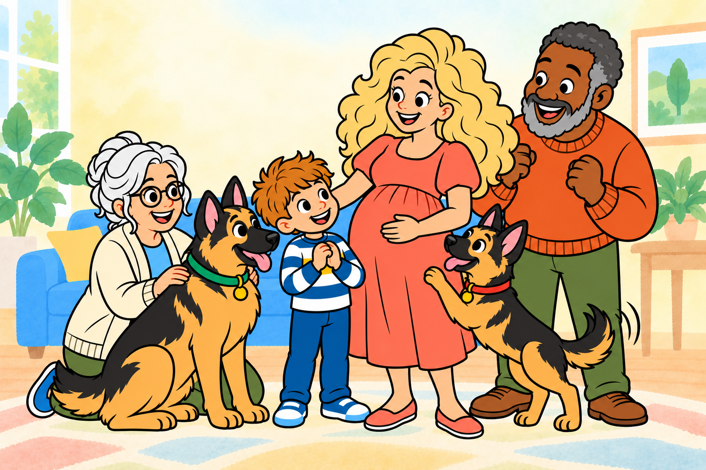
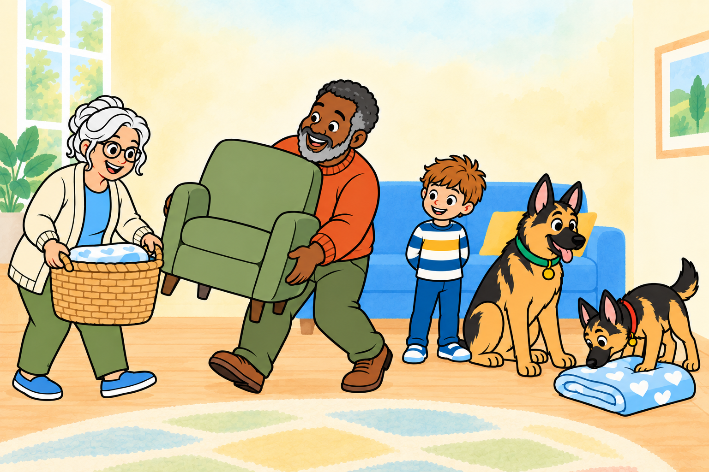
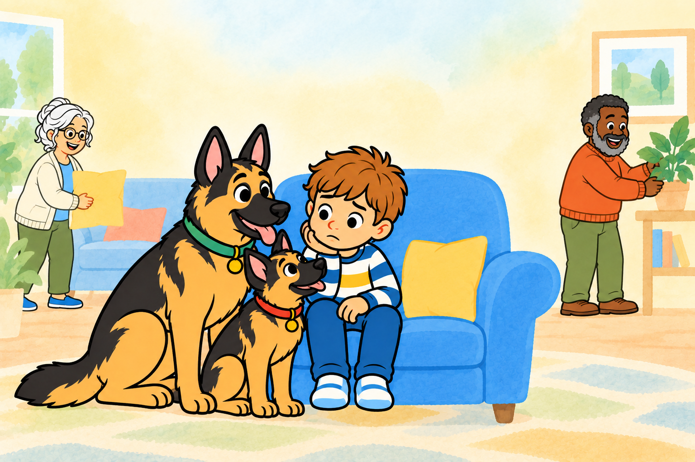
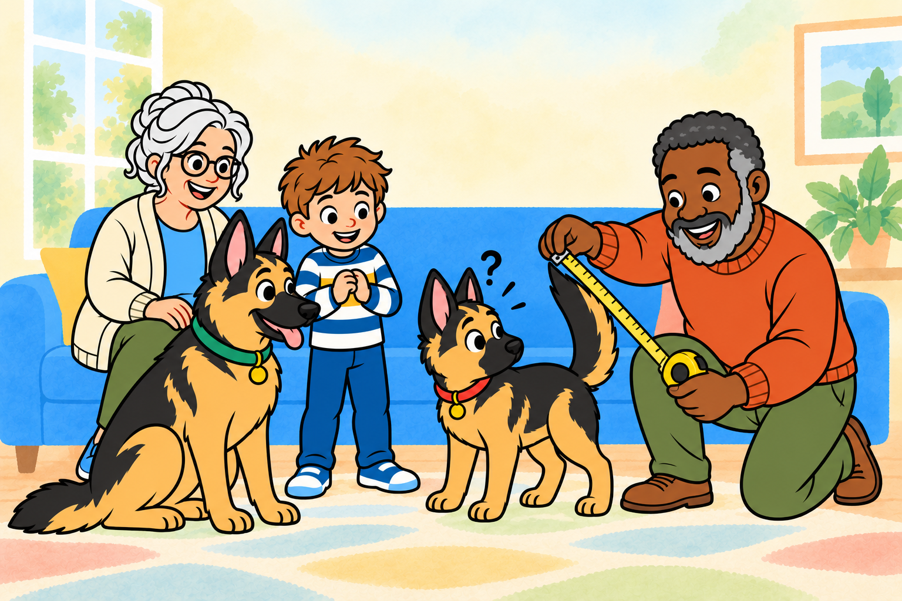
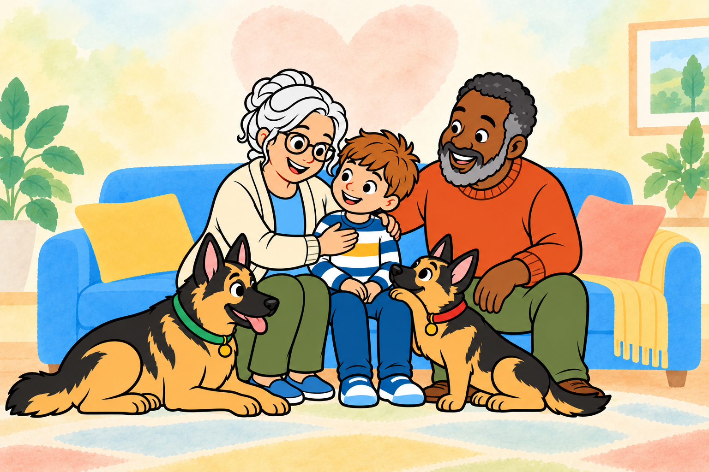
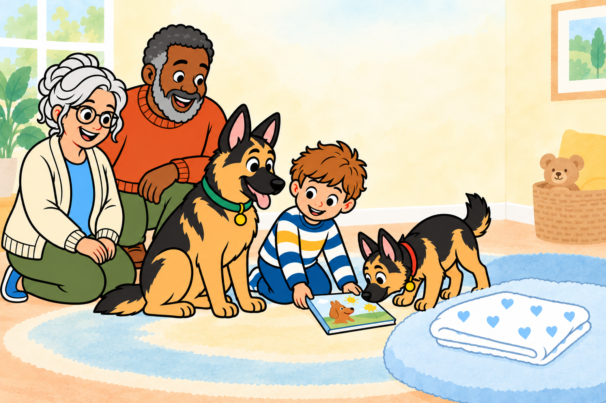

Milo Makes Room
A Gaga and Grumpy Story

Mama Murdle had wonderful news to share.
“A baby is growing in my belly,” she said. “You’re going to be a big brother!”

Gaga moved a basket.
Grumpy moved a chair.
Everyone was making room for someone who wasn’t there.

If the baby needed room, where would Milo go?
Would there still be room for him? Milo didn’t know.

“We have plenty of room!” said Grumpy. “I measured it myself!”
He measured the sofa, the chair—and nearly measured Ruby’s tail!

Gaga hugged Milo close.
“When someone new joins a family, love is not cut in two. A heart can stretch and make more room—enough for them, and enough for you.”

Milo placed his favorite book beside the blanket blue.
His love had not grown smaller. It grew—and grew—and grew!
There would always be room for Milo, too.
The End